Social inbox
Social inbox: comments, messages and reviews as tickets
SocialHub CX turns comments, direct messages, mentions, posts and reviews from your social media profiles and WhatsApp into tickets – in the same workspace as your emails.

What it's about
In the Social module your team works with your connected social media profiles. Public and private messages become tickets with the same core concepts as emails: status, priority, owner and tags.
What's included
- Channels: Facebook, Instagram, X, YouTube, LinkedIn, Bluesky, TikTok and Threads, plus Google Business Profile, Google Play Store, Trustpilot and WordPress – some as add-ons
- WhatsApp as a channel
- Message types: comments, direct messages, mentions, posts and reviews
- Filters by message type, channel and date range
- Assignment, status and an “Unassigned” view as in the Email module
- Templates, internal notes and AI Co-Pilot with quick actions as in the Email module
- Social dashboard with response rate, response time and breakdown by type, channel and sentiment
How your team works with it
- A comment under a post becomes a ticket in the Social module.
- Your team filters by channel or message type and takes the ticket.
- The reply is written with a template or Co-Pilot draft and sent by a person.
- The social dashboard shows response rate, response time and sentiment of incoming messages.
What's not included
Not included are web chat, CRM integrations and an open API.
FAQ
Frequently asked questions
Which social media channels does SocialHub CX support?
SocialHub CX supports the networks SocialHub connects: Facebook, Instagram, X, YouTube, LinkedIn, Bluesky, TikTok and Threads, plus Google Business Profile, Google Play Store, Trustpilot and WordPress, some of them as add-ons. WhatsApp is available as a channel too. Comments, direct messages, mentions, posts and reviews become tickets.
Does SocialHub CX also handle public comments, not just direct messages?
Yes, SocialHub CX also turns public comments, mentions and reviews into tickets, not just direct messages. Your team filters by message type and channel and handles public and private requests in the same workspace as emails, with templates, notes and Co-Pilot.
Do marketing and service work together in SocialHub CX?
Yes, SocialHub CX builds on the SocialHub platform, so marketing and service work with the same connected profiles. Service handles requests as tickets with clear ownership and a documented history. Internal notes and watchers bring in further colleagues without information getting lost.
Q&A
Questions and answers
Can I handle Facebook and Instagram comments, not just direct messages, as tickets in the service inbox?
Yes, SocialHub CX turns Facebook and Instagram comments into tickets, not just direct messages. In the Social module, comments, direct messages, mentions, posts and reviews from connected profiles land as tickets and can be filtered by message type, channel and date range. Your team handles public and private requests in the same workspace as emails.
Do Instagram direct messages arrive in the service inbox?
Yes, SocialHub CX turns Instagram direct messages into tickets in the Social module, as well as comments, mentions and posts. Your team filters by channel and message type and handles Instagram requests in the same workspace as emails, WhatsApp and other networks. The Instagram profile needs to be connected as a channel.
Can I handle channels such as email, Instagram and Facebook in separate views?
Yes, SocialHub CX separates email and social media into two modules and offers filters and views in both. In the Social module you filter by channel, such as Instagram or Facebook, and by message type; in the Email module by mailbox, tag, status and assignee. Rule-based folders save frequent views permanently for the whole team.
Does the tool support WhatsApp Business?
Yes, SocialHub CX offers WhatsApp as a channel; which packages include WhatsApp is clarified on request. Your team handles WhatsApp messages in the same workspace as social media messages and emails. Single sign-on (SSO) is also available for SocialHub CX, with packaging likewise on request.
See the social inbox live
We show you the feature using your typical requests.
- German provider
- Hosted in Germany
- ISO/IEC 27001 (SocialHub)
- Hosting provider with BSI C5 attestation